Exam Like Questions: Module 9
Lecture 19 and 20
T/F
1) The image in a mirror is always real.
Answer: False
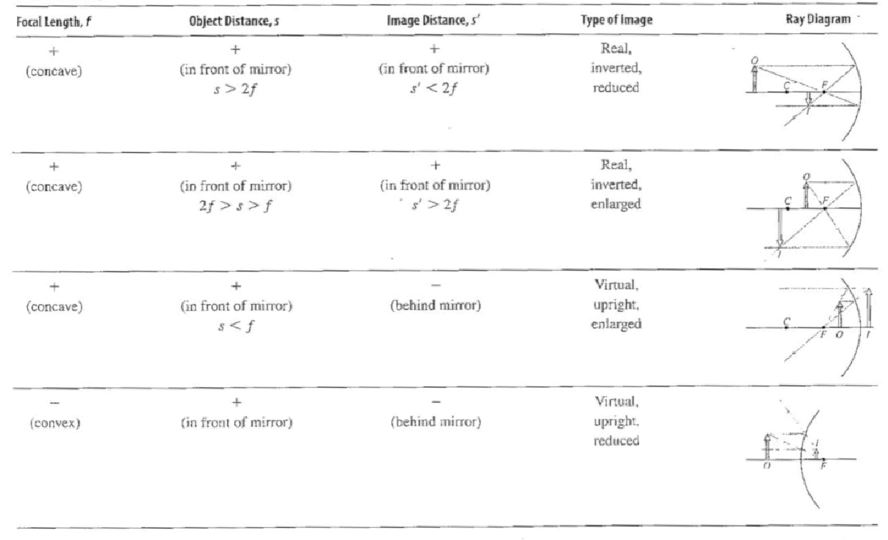
2) A lens submerged in water will have the same focal distance as when it is in air.
Answer: False
Lensmaker’s Equation: 
Multiple Choice
1) A double convex thin lens has a radius of 25 cm for the first surface and a radius of 40 cm for the second surface. If the glass has a refractive index of 1.55 the focal length is a) 28 cm, b) 9.93 cm, c) 121 cm, or d) 63 cm.
Answer: A
Lensmaker’s Equation: 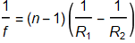
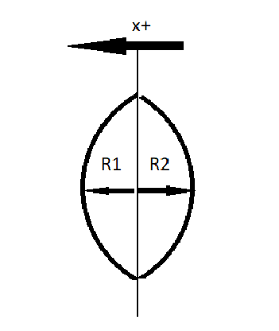
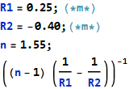
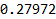
2) An object is placed 16 cm in front of a thin concave lens of 10 cm focal length, therefore the image distance is a) -6.15 cm, b) 6.15 cm, c) 26.67 cm, or d) -26.67 cm.
Answer: A
Lens Equation: 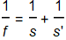
or 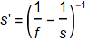
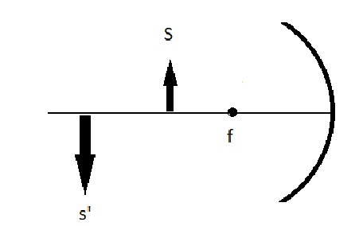
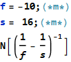
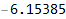
Useful Exercises
1) You grid a double convex lens whose radii are both 28 cm from glass with a refractive index of 1.58: a) what is the focal length of your lens; b) where would you place a 3 cm tall object in order to have a magnification of 2.5 and the image is real?
Answer: a) 24 cm b) 33.8 cm
Lensmaker’s Equation:
Magnification: 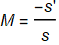
Lens Equation:  therefore 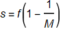
therefore 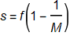

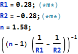
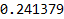
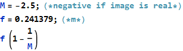
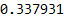
2) An object is placed at 25 cm in front of a convex lens of focal length 10 cm, and a second identical lens is located 30 cm beyond the first lens; a) where is the final image located, b) is it real or imaginary?
Answer: a) 40 cm b) real, inverted, and enlarged
Lens Equation:
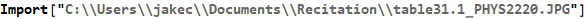
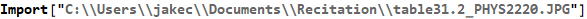
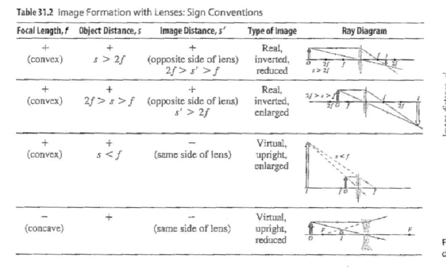

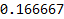
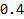
Lecture 21
T/F
1) Two beams of light of the same wavelength constructively interfere when their respective wave crests align with the other beams wave troughs.
Answer: False
This is destructive interference. Crests cancel with the troughs.
2) The double slit experiment proved that light was a wave phenomenon.
Answer: True
The Young double slit experiment proves the wave-nature of light
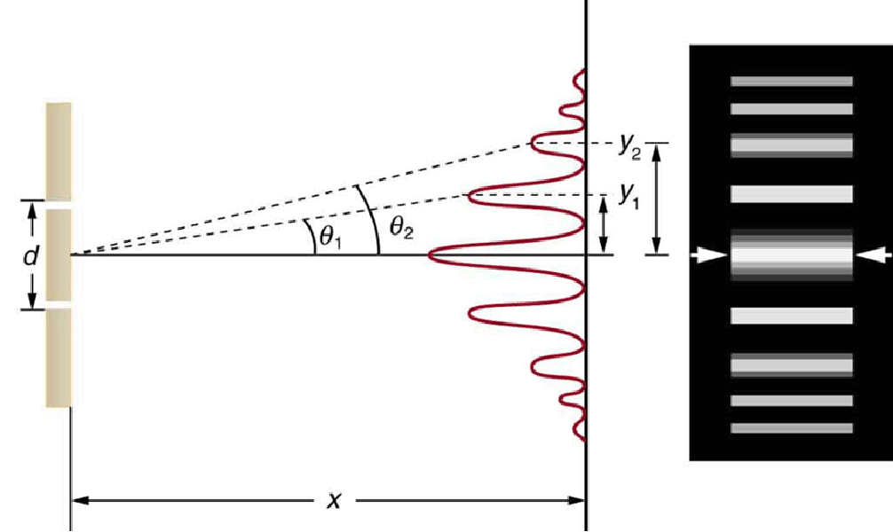
3) The first maximum location on a screen of an interference pattern moves closer the zeroth order maximum as the double slit separation distance decreases.
Answer: False
Maxima for small θ: 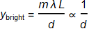
∴ as d decreases the distance of the first maximum (m=1) location on a screen moves farther from the zeroth order
Multiple Choice
1) Two slits are separated by 0.2mm. A screen 2 m in front of the slits show an interference pattern whose first and fourth maxima are separated by 1.8 cm. What is the wavelength of the light; a) 900 nm, b) 450 nm, c) 600 nm, or d) 1800 nm.
Answer: C
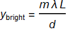
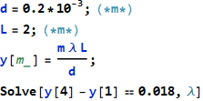
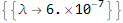
2) Red light at 630 nm passes through a grating of 6,000 lines. What is the wavelength resolution at the order for this grating; a) 21 pm, b) 105 pm, c) 525 pm, or d) 21 mm.
Answer: A (pico is )
Resolving Power: 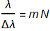
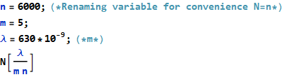
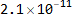
Useful Exercises
1) Interference also applies to other E&M wavelengths. X-ray diffraction was used to determine crystal lattice spacing. If the first order interference maximum for a certain crystal occurs at an X-ray incidence angle of 25° to the surface and the wavelength of the X-rays are 0.13 nm what is the crystal lattice spacing?
Answer: 153 pm = 1.53 = 0.153 nm =  m
m
X-Ray: 2d sin(θ)=m λ
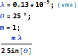
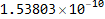
2) Calculate the spacing between the first and fourth order maximum for a double slit experiment with a slit spacing of 0.083 mm located 1.75 m in front of the screen for a) 450 nm light, b) 550 nm light, and c) for 650 nm light.
Answer: a) 28.5 mm b) 34.8 mm c) 41.1 mm
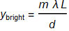
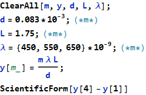
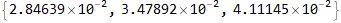